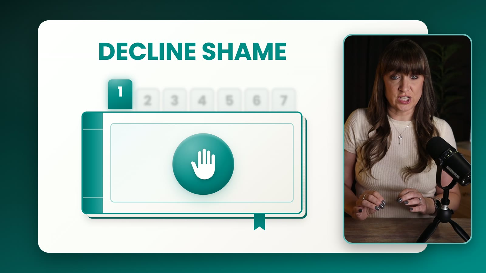
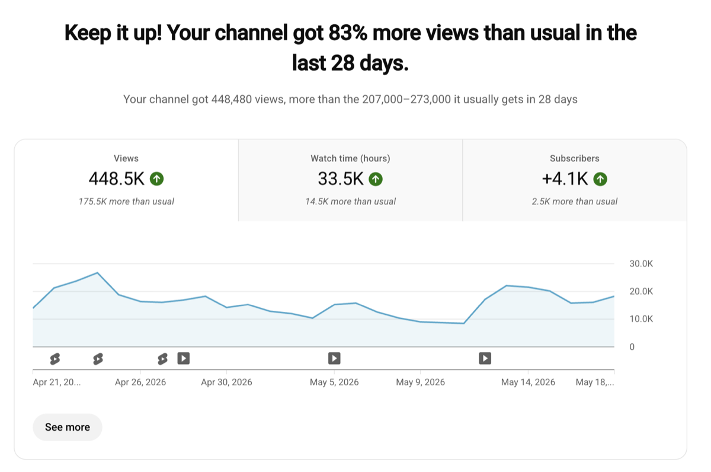
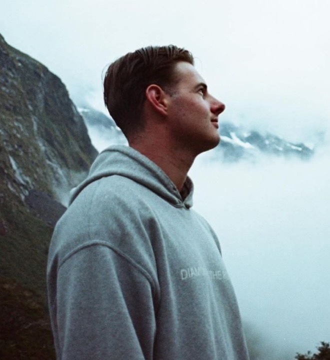

Long-form YouTube editing for educational creators
Publish better YouTube videos every week without carrying the edit.
You film. I edit. A new long-form video every week, on time, in your channel’s style.

A recent edit, start to finish. Press play.
Who it is for
This is for you if
The package
One package. Four videos a month. One consistent standard.
You film. You send the footage, script, and artwork. I handle the edit, pacing, graphics, sound, music, and final delivery.
Your first cut comes back within 72 hours once the required inputs are complete. You leave feedback in one consolidated Frame.io pass. Two rounds are included per video.
The Retention Editing Partnership
- Four long-form videos a monthOne a week, edited for retention, in your channel's own look.
- First cut within 72 hoursFrom the moment your footage, script and artwork are all in.
- Two rounds of notes per videoEach round is one pass in Frame.io, fixed together.
- One questionnaire, one onboarding callWe set your look and your rules once. No weekly meetings.
- Music and final export handledOne music pick per video. The final lands in Frame.io.
Three creators at a time. We talk numbers on the call, once we both know it is a fit.
How delivery works
Four steps, then it runs every week.
Case study
Jennifer went from 10 hours a week on editing to about one.
“Tyron’s onboarding was clear and easy, he immediately elevated my channel quality, cut my time to about an hour per video, boosted AVD, views, revenue, and freed up time for me to launch new products and grow my email list by thousands.”

Her own YouTube Studio. The numbers are hers, compared with her previous 28 days.
In their words
Fast, and right the first time.
“Tyron is a wonderful combination of fast and high-quality. I’m a picky guy and I want things quick. Tyron has the fewest revision cycles of any editor that I’ve worked with. He gets it from the start.”
“If you don’t have enough time to actually grow your channel or business the way you want to, working with Tyron will be a night and day difference. You’ll go from stressing about your next upload to being videos ahead of your schedule.”
“With my previous editor I couldn’t rely on work getting completed on time and deadlines would be missed often. With Tyron he is lightning quick and I get V1 and changes made super fast. Would recommend.”
“Tyron did a fantastic job editing my video. He was quick to implement feedback, communicated clearly, and delivered everything on time. I will happily work with him again and recommend him to anyone looking for a skilled video editor.”

Who you are working with
Hi, I’m Tyron.
I edit long-form YouTube for educational creators from Wānaka, New Zealand. Not an agency: when you hand me a video, I am the one who edits it.
Clients keep me because the first cut arrives on time, the second cut is usually the last, and every video looks like it belongs on their channel.
Ready to stop carrying the edit?
Apply in two minutes. If it looks like a fit, we talk this week.